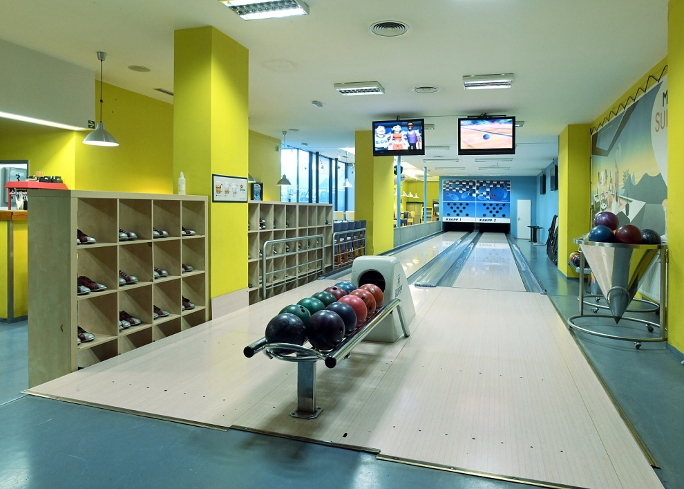
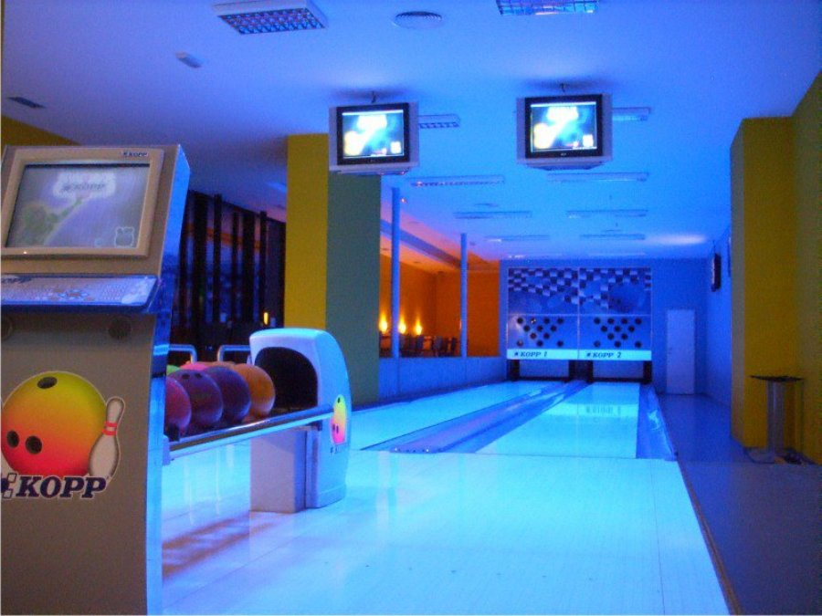

V S-clubu si můžete zaházet na dvou drahách KOPP s německými stavěči S.E.S. Na každé z nich může zápolit až deset hráčů. Italský scoring, dělá krásné animace a přispívá ke skvělé zábavě. Děti mohou využít stavitelné mantinely. Nekuřácké prostředí ideální pro vaše přátele, rodiny s dětmi, nebo firemní akce.
Princip hry Hra se sestává z deseti kol, tzv. frame. V každém kole (s výjimkou posledního) má hráč dva hody na to, aby srazil deset kuželek na konci dráhy. V případě sražení všech deseti kuželek prvním hodem, tzv. strike, se druhý hod již nehází a hraje další hráč. Pokud se v desátém kole hráči podaří alespoň druhým hodem srazit všechny kuželky (tzv. spare), hází ještě jednou, tedy potřetí. V případě, že v desátém kole hráč prvním hodem všechny kuželky shodí, má ještě další dva hody.
Počítání bodů Za každou sraženou kuželku má hráč jeden bod. Pokud hráč hodí strike, k hodnocení daného framu se mu připočítávají ještě body z následujících dvou vypuštění koule, v případě spare se mu k hodu připočítávají body z jednoho následujícího vypuštění (což je i důvod hodu navíc v posledním kole v případě strike). V jedné hře lze tedy dosáhnout maximálně 300 bodů (12 po sobě jdoucích striků).
Cena hry 1 hodina hry na jedné dráze stojí 300 Kč. Máme zde pro Vás i speciální obuv, kterou půjčujeme za 10 Kč/pár na celou dobu hry. Můžete mít i vlastní sportovní obuv se světlou podrážkou. Boty musí být čisté a odsouhlasené personálem. Aktuálně lze u nás využít MULTISPORT kartu (sleva 25% za každou kartu).
 